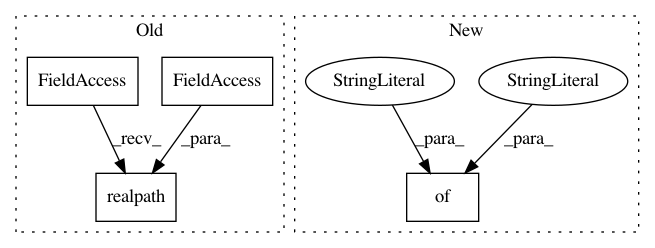

be02add9cc983f8664d27c42594b953dcf5ff39f,yarll/main.py,,run_experiment,#Any#Any#Any#Any#Any#,7
Before Change
config["description"] = description
config["seed"] = str(seed)
config["start_time"] = datetime.datetime.now().astimezone().isoformat()
save_config(monitor_path, config, [env.metadata["parameters"] for env in envs], repo_path=os.path.abspath(os.path.join(os.path.realpath(__file__), "../../")))
agent.learn()
After Change
args["envs"] = envs
if len(envs) == 1 or only_last:
args["env"] = envs[-1]
env_agent_action_space = {
Discrete: "discrete",
Box: "continuous",
MultiBinary: "multibinary"
}
action_space_type = "discrete" if isinstance(envs[0].action_space, Discrete) else "continuous"
action_space_type = env_agent_action_space.get(envs[0].action_space, None)
state_dimensions = "single" if len(envs[0].observation_space.shape) == 1 else "multi"
agent = make_agent(spec["agent"]["name"], state_dimensions, action_space_type, **args)
In pattern: SUPERPATTERN
Frequency: 3
Non-data size: 4
Instances
Project Name: arnomoonens/yarll
Commit Name: be02add9cc983f8664d27c42594b953dcf5ff39f
Time: 2019-06-21
Author: arno.moonens@gmail.com
File Name: yarll/main.py
Class Name:
Method Name: run_experiment
Project Name: epfl-lts2/pygsp
Commit Name: 74f3e0f30dfbd833678ffd16150a2c6e4edd2fce
Time: 2015-01-06
Author: basile.chatillon@epfl.ch
File Name: pygsp/graphs.py
Class Name: Airfoil
Method Name: __init__
Project Name: bokeh/bokeh
Commit Name: e9527915f88c9495017543a344766189d7412c51
Time: 2017-01-11
Author: azpujps@gmail.com
File Name: versioneer.py
Class Name:
Method Name: versions_from_parentdir